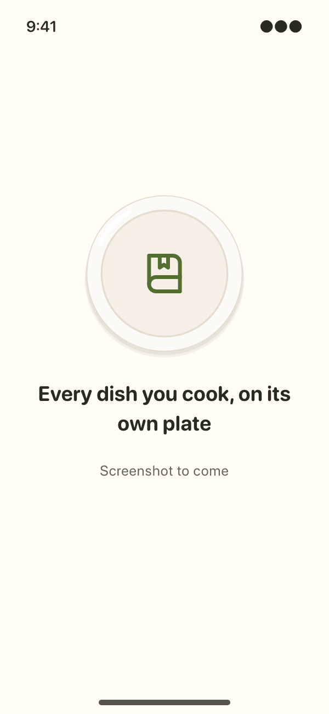
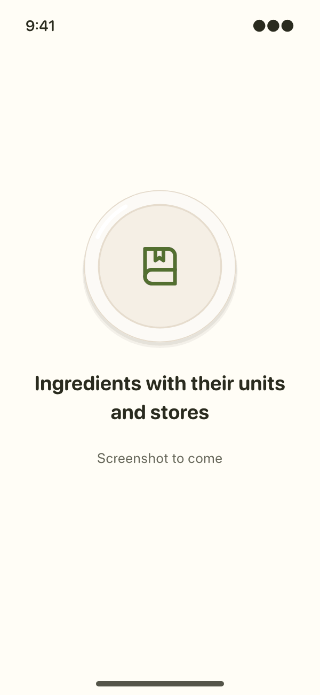
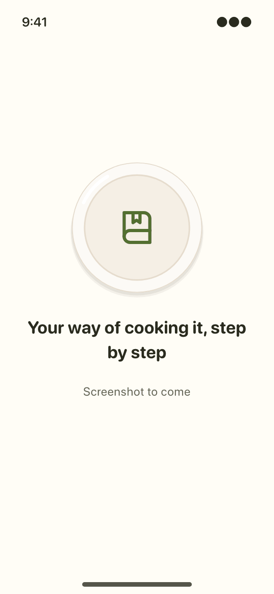
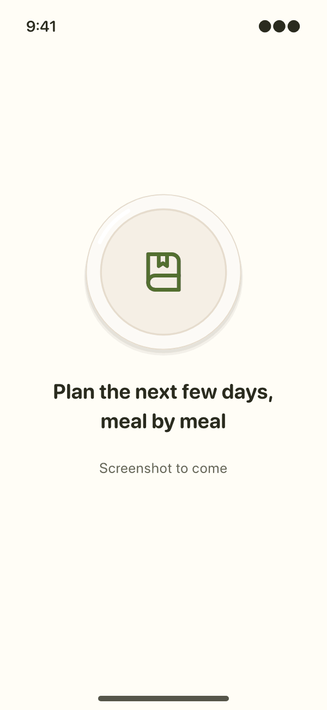
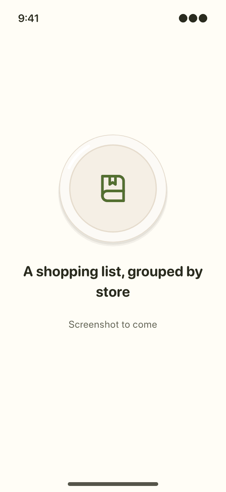
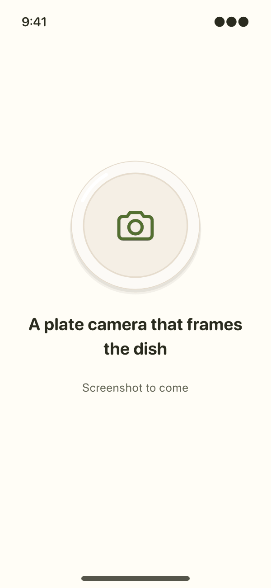
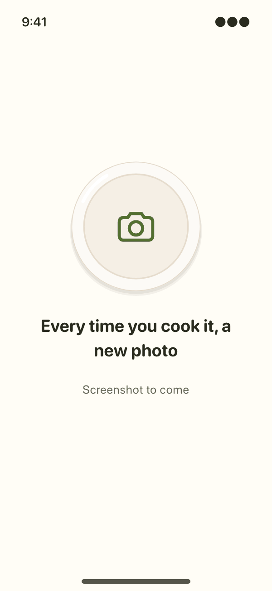
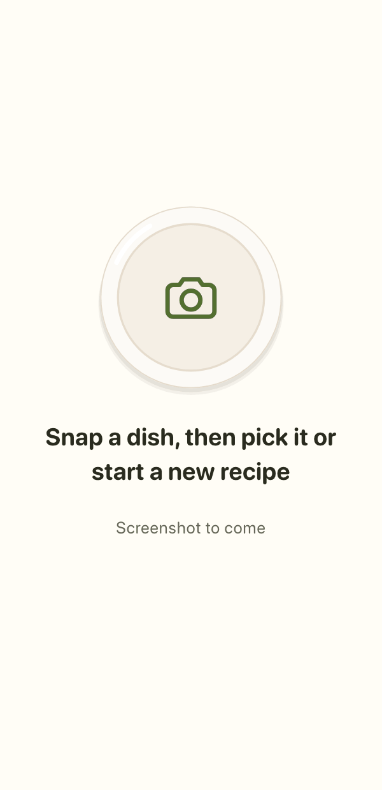
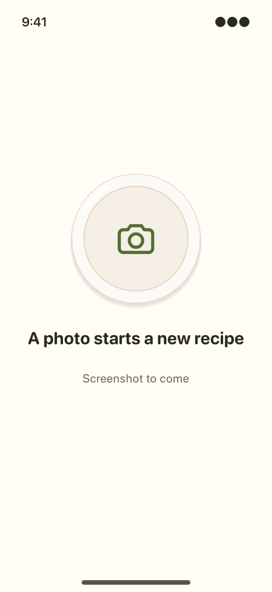

Keep it, snap it, share it
Your recipe
knowledge base
Snap the dish,
see it improve
Share the dishes
you love
It knows your ingredients and stores, keeps your own way of cooking, and plans your meals with the list done.
A cute plate camera keeps every dish you make, and any photo can start a new recipe.
Lyric cards and numbered cards, with a QR code that brings the whole dish along.
Broccoli Beef
Your recipe
knowledge base
It knows your ingredients and the stores you buy them from, keeps your own way of cooking each dish, and plans your meals with a clear shopping list.

Every dish you cook, on its own plate 
Ingredients with their units and stores 
Your way of cooking it, step by step 
Plan the next few days, meal by meal 
A shopping list, grouped by store
Snap the dish,
see it improve
A cute plate camera keeps every dish you make, so you can look back on how each one has come along, and turn any photo into a new recipe.

A plate camera that frames the dish 
Every time you cook it, a new photo 
Snap a dish, then say which one it is 
A photo starts a new recipe
iCloud sync
Your kitchen, recipes and plans sync through your own private iCloud.
No account
Nothing to sign up for. Open the app and start.
Light and dark
Supports light and dark mode.
English and Chinese
English, Simplified and Traditional Chinese. Switch in Settings at any time.
Your kitchen data
stays yours
Your ingredients, recipes, plans and photos stay on your iPhone and, when iCloud is on, in your own private iCloud. Shiso runs no server of its own, and the developer can’t see any of them, apart from dishes you share with a QR code, starting with version 2.1. Starting with version 2.0, the app also sends usage statistics to Google Analytics; the privacy policy has the details.
Read the privacy policy